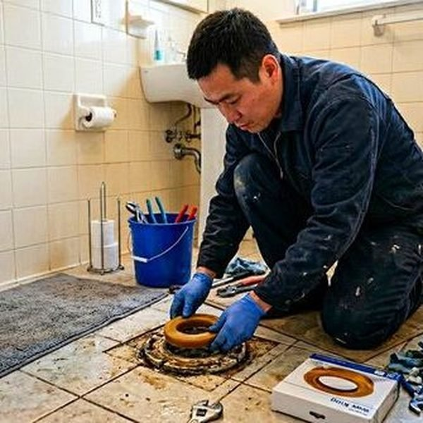
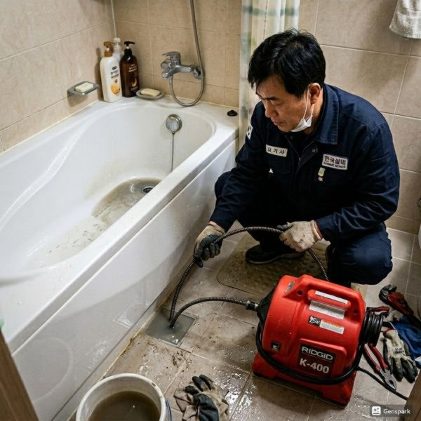

제우스시설관리 | 2025년 4월
빌라나 연립주택에서 공용 배관 문제가 발생하면, 누가 비용을 부담할 것인지 분쟁이 생깁니다. 법적 기준을 정확히 알고 있으면 불필요한 분쟁을 피할 수 있습니다.
공용 배관:
• 건물 외벽 배관
• 1층 지하 배관
• 옥상 배관
• 각 세대를 연결하는 메인 배관
→ 건물주 또는 관리사무소 책임
전용 배관:
• 각 세대 실내 배관
• 개인 수도꼭지, 변기, 싱크대
• 세대 내부에서 문제 발생 지점
→ 세대주 책임
상황: 2층의 변기 물이 1층을 적신다
• 2층 배관에 균열이 있으면 → 2층 세대주 책임
• 1층 배관 구조상 문제 → 건물주 책임
• 공용 배관에서 역류 → 건물주 책임
이 경우 내시경 촬영으로 정확한 원인을 파악한 후 책임을 정합니다.
1단계: 원인 파악 (내시경 촬영)
제우스시설관리가 내시경으로 배관을 촬영하여 문제 지점과 원인을 기록합니다. 이 기록이 법적 증거가 됩니다.
2단계: 문제 세대 및 원인 입증
내시경 촬영본을 바탕으로 책임 세대와 배관주(건물주 또는 세대주)를 명확히 합니다.
3단계: 수리 비용 분담
• 세대주 책임인 경우: 해당 세대주가 전액 부담
• 건물주 책임인 경우: 건물주 또는 건물 유지비에서 처리
• 불가항력(구조 결함): 협의 후 분담
4단계: 이웃 피해 배상
누수로 이웃 세대가 피해를 입었으면, 손해배상청구도 가능합니다. 이 경우 건물 화재보험이 일부 보상하기도 합니다.
✓ 문제 발생 시 즉시 건물주/관리사무소에 신고
✓ 배관 사진 촬영으로 증거 남기기
✓ 전문가 진단 받기 (개인적으로 기록 보관)
✓ 문자/이메일로 의사소통 기록 남기기
✓ 심한 분쟁 시 변호사 상담
대부분의 경우 내시경 촬영으로 책임을 명확히 하면 분쟁이 빠르게 해결됩니다.

